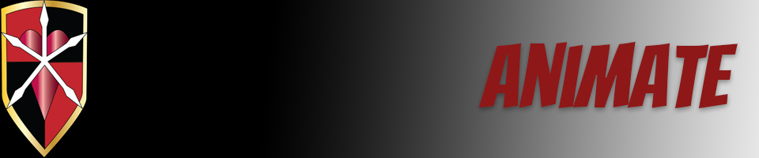

I came up with my storyboard sequence pretty early on and I am pretty satisfied with the way it turned out. I'm a big fan of those old timey anime transformation sequences and I wanted to do one of my own with my own characters. I reused my Vector final and created another character in Illustrator as the final transformation. I actually took this opportunity to go back into Illustrator and play around some more. The character I came up with was inspired by various video games but I was able to make the design my own. I knew animating was definitely time consuming but I didn't realize that even the most basic movements would take a lot of work to get right. This was probably one of the most time-consuming projects I've ever worked on. I'm definitely considering animation in the future; hopefully I can become prominent enough so I can ship over the tweens and hard work to a animation studio in Korea or something.
Home | Raster | Vector | Animate | Print | Contact